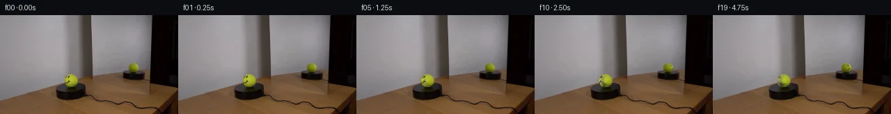

![首帧]()

Round 00
2026-11-05T04:47:08.776905+00:00像素候选变化代码 +197/−0inspection 更新
pixels 2f14d35b802c72e7 · code ecf6dd76442ec4a4
查看本轮 generate.py 真实 diff
--- previous/generate.py +++ current/generate.py @@ -0,0 +1,197 @@ +#!/usr/bin/env python3 +"""Generate a restrained, locked-camera tennis-ball rotation from first_frame.png.""" + +from pathlib import Path + +import cv2 +import numpy as np +from PIL import Image, ImageDraw, ImageFont + +import artifact_io + + +ROOT = Path(__file__).resolve().parent +SOURCE = ROOT / "first_frame.png" +H, W = 144, 256 + + +def make_face_layer(source: np.ndarray): + """Separate the photographed smiley from a locally inpainted ball surface.""" + mask = np.zeros((H, W), np.uint8) + + # The photographed face is oblique: one tight upper feature cluster and a + # broader curved mouth cluster. This mask deliberately excludes the ball + # silhouette so the fuzzy edge never changes shape. + cv2.ellipse(mask, (98, 90), (4, 4), -8, 0, 360, 255, -1, cv2.LINE_AA) + cv2.ellipse(mask, (99, 98), (6, 4), 10, 0, 360, 255, -1, cv2.LINE_AA) + cv2.line(mask, (96, 94), (102, 96), 255, 3, cv2.LINE_AA) + + # Restrict absolutely to the real ball's interior. + yy, xx = np.mgrid[:H, :W] + ball = (((xx - 102.0) / 9.6) ** 2 + ((yy - 96.0) / 10.0) ** 2) <= 0.94**2 + mask = np.where(ball, mask, 0).astype(np.uint8) + binary = np.where(mask > 16, 255, 0).astype(np.uint8) + + blank = cv2.inpaint(source, binary, 3.0, cv2.INPAINT_TELEA) + # Keep all pixels outside the selected facial area mathematically exact. + blank[binary == 0] = source[binary == 0] + residual = source.astype(np.float32) - blank.astype(np.float32) + + # A dark-mark strength map used to transplant the same photographed marks + # into the smaller, dimmer reflection without transplanting its lighting. + src_luma = cv2.cvtColor(source, cv2.COLOR_RGB2GRAY).astype(np.float32) + blank_luma = cv2.cvtColor(blank, cv2.COLOR_RGB2GRAY).astype(np.float32) + strength = np.clip((blank_luma - src_luma - 2.0) / 78.0, 0.0, 1.0) + strength *= binary.astype(np.float32) / 255.0 + strength = cv2.GaussianBlur(strength, (3, 3), 0.55) + return blank, residual, strength + + +def spherical_map( + dst_center, + dst_radii, + src_center, + src_radii, + phase, +): + """Build inverse maps between two orthographic views of a rotating sphere. + + `phase` is added to destination longitude to recover source longitude. + The vertical coordinate is retained because the rotation axis is vertical. + """ + dcx, dcy = dst_center + drx, dry = dst_radii + scx, scy = src_center + srx, sry = src_radii + yy, xx = np.mgrid[:H, :W].astype(np.float32) + v = (yy - dcy) / dry + dst_half = drx * np.sqrt(np.clip(1.0 - v * v, 0.0, 1.0)) + nx = np.divide(xx - dcx, dst_half, out=np.full_like(xx, 2.0), where=dst_half > 1e-5) + valid = (np.abs(v) < 0.96) & (np.abs(nx) < 0.985) + dst_lon = np.arcsin(np.clip(nx, -1.0, 1.0)) + src_lon = dst_lon + phase + valid &= np.abs(src_lon) <= np.pi / 2 + src_half = srx * np.sqrt(np.clip(1.0 - v * v, 0.0, 1.0)) + map_x = scx + src_half * np.sin(src_lon) + map_y = scy + v * sry + map_x = np.where(valid, map_x, -100.0).astype(np.float32) + map_y = np.where(valid, map_y, -100.0).astype(np.float32) + return map_x, map_y, valid.astype(np.float32) + + +def render_frames(source: np.ndarray) -> np.ndarray: + blank, face_residual, face_strength = make_face_layer(source) + frames = [] + + # The mirror sees the marked meridian about 118 degrees away at t=0. + mirror_view_offset = np.deg2rad(118.0) … diff truncated; 110 more lines …